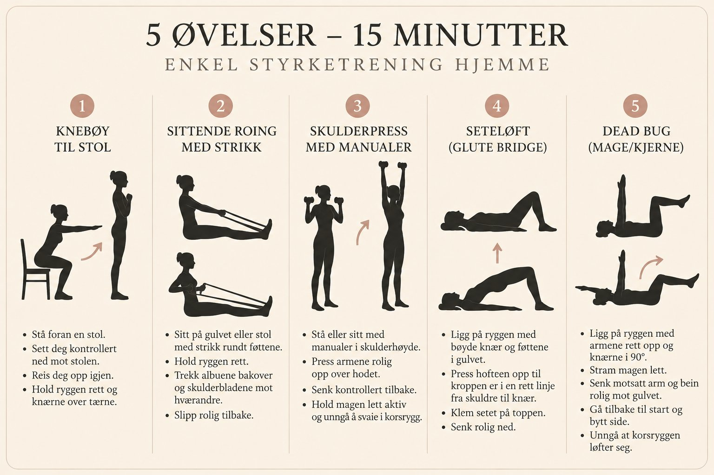
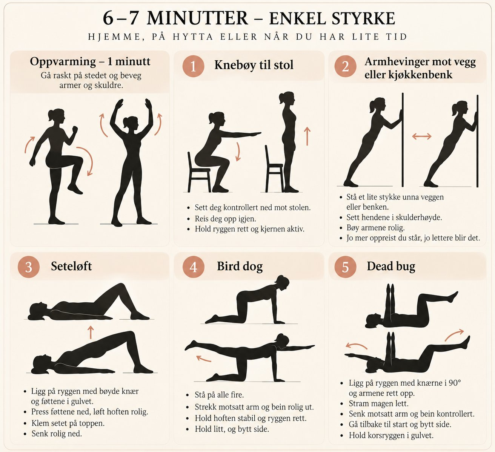

To korte program du kan gjøre i stua. Målet i starten er å bli kjent med øvelsene og kjenne at du mestrer dem, ikke å bli ordentlig sliten.

Oppvarming, ca. 2 min: Gå på stedet, rull skuldrene, beveg armene og gjør noen rolige knebøy til stol.
Sett deg kontrollert ned mot stolen og reis deg opp igjen. En fin og trygg start for lår og sete.
Sitt på stol eller gulv og fest strikken godt rundt føttene. Trekk albuene bakover og hold brystet oppe. Trener rygg og armer.
Sitt eller stå. Press manualene rolig opp over hodet og senk dem kontrollert. Bruk lette vekter i starten.
Ligg på ryggen med bøyde knær. Press føttene i gulvet, løft hoften rolig og senk igjen. Trener sete, bakside og stabilitet rundt bekken og kjerne.
Ligg på ryggen med knærne bøyd. Stram magen lett og senk motsatt arm og bein kontrollert. Gjør bevegelsen mindre hvis korsryggen begynner å løfte seg fra gulvet.

Oppvarming, 1 min: Gå raskt på stedet og beveg armer og skuldre.
Sett deg kontrollert ned mot stolen og reis deg opp igjen.
Stå et lite stykke unna, sett hendene mot veggen eller benken og bøy armene rolig. Jo mer oppreist du står, jo lettere blir det.
Ligg på ryggen med bøyde knær. Press føttene i gulvet, løft hoften rolig og senk igjen.
Stå på alle fire. Strekk motsatt arm og bein rolig ut, hold litt, og bytt side. Hold ryggen rolig.
Ligg på ryggen med knærne bøyd. Stram magen lett og senk motsatt arm og bein kontrollert.
Klar til å starte
Trykk start når du er klar
Se på den første uka som en utforskning, ikke en prestasjon. Ta med deg tankene til neste samtale.
{kind=link}
{kind=link}